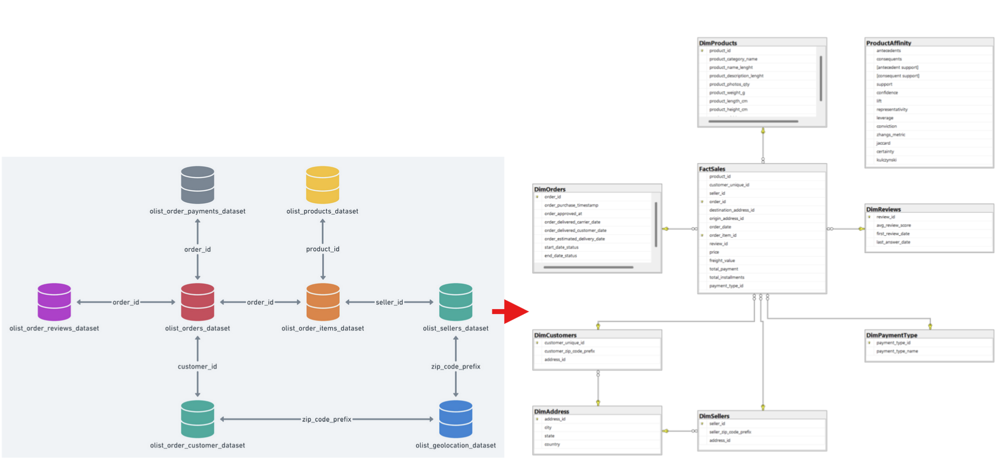

Project 1: Brazil E-commerce Sales Analysis
- Power BI
- DAX
- M Language
- MS SQL Server
- Python (pandas, sqlalchemy, apriori, association rules)
- Docker
Data Modellering
The first step was to restructure the database for it to become a data warehouse to handle the data in a more robust way and to clean up any inconsistencies. To keep track of the order history and its status updates, type 2 slowly changing dimension was created. The MS SQL Server database was deployed in a Docker container.
Data Cleaning & Exploration
There were a lot of inconsistencies that needed to be dealt with, such as typos and missing values. Additionally, the data lacked a Date table in order to later on visualise any insights over a continuous period of time. Relationships between different columns were explored, and additional measures/calculated columns were created for a deeper analysis. To dive deeper, I performed basket analysis to figure out which products are often bought together. Yet to sum it up, I wasn't able to find any relationships until lowering the min support to 0.01%, or in more interpretable words, I was looking for item combinations that appear in at least 1 in every 10,000 orders. My analysis found one weak yet positive relationship between two subcategories, what means that customers don't have any tendencies to buy certain subcategories together, most likely no strong relationships were found due to the limited amount of data in the dataset.